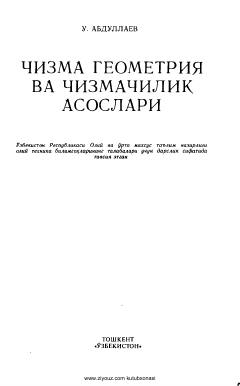

CGOliy texnika talabalari uchun chizma geometriya va chizmachilik fanidan asosiy darslik.
Ushbu darslik oliy texnika bilim yurtlari talabalari uchun mo'ljallangan bo'lib, chizma geometriya va chizmachilik fanining nazariy asoslari, proyeksiyalash usullari hamda mashinasozlik chizmalarini bajarish qoidalarini o'rgatadi. Kitobda fazoviy shakllarning tekislikdagi tasvirlarini yasalishi, metrik va pozitsion masalalarni yechish algoritmlari batafsil yoritilgan.